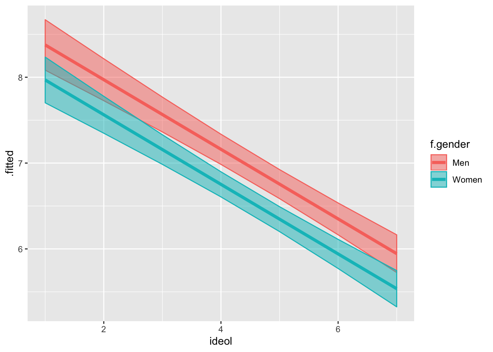
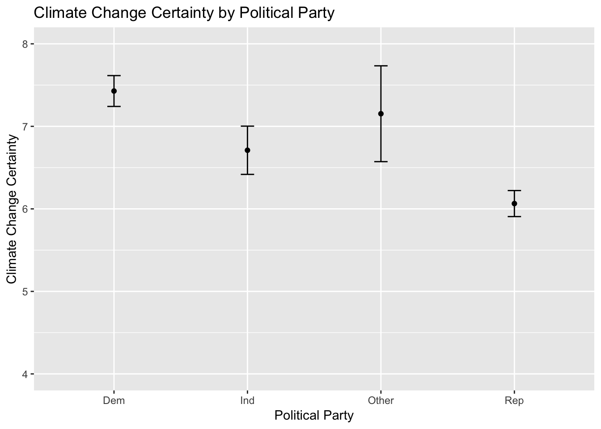
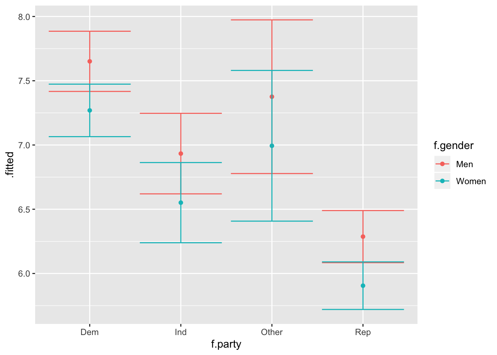
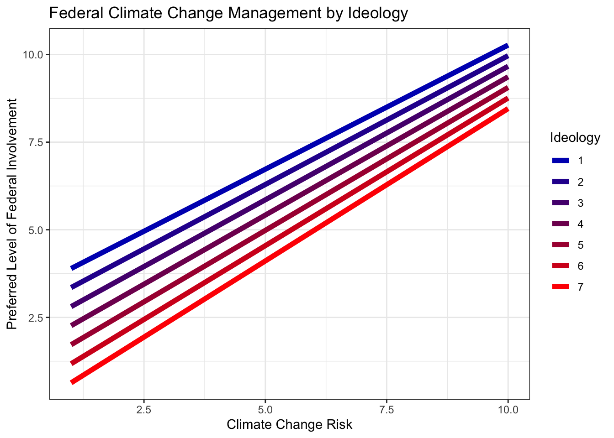
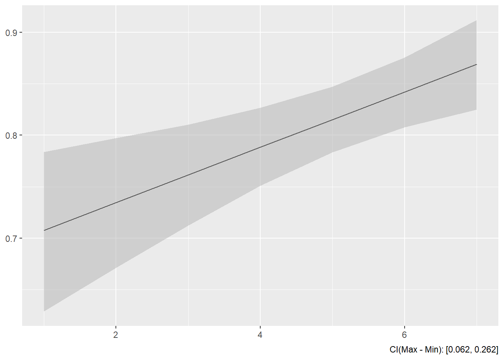
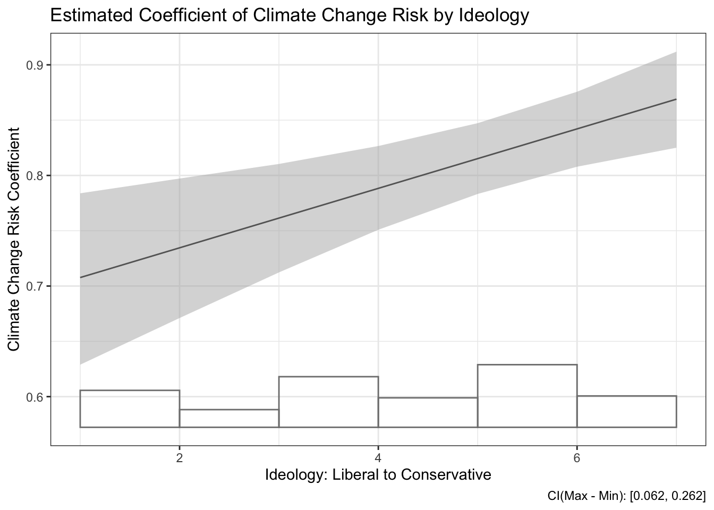

10 Categorical Explanatory Variables, Dummy Variables, and Interactions
This lab focuses on ways in which we use and understand categorical independent variables. So far the independent variables we have worked with have been interval or ordinal data. When working with categorical data, there are different approaches and techniques of interpretation. The following packages are required for this lab:
- tidyverse
- psych
- stargazer
- interplot
- car
- reshape2
- broom
10.1 Dummy Variables
We often have situations in the social sciences that require constructing models to include qualitative variables. To facilitate this, we employ dichotomous dummy variables to make the model function via 0s and 1s. When using dichotomous dummy variables for catergorical data, the presense of the category of interest receives a value of 1 and in its absence the value is 0.
To demonstrate dummy variables in models we will look to the class data set. The gender variable is coded as a 0 for women and 1 for men. This makes it a dummy variable for men, with women as the referent group. If we wanted to construct a model that looked at how certainty of climate change varied by ideology, education, income, age, and gender, our model would look like this:
\[Y_i=\alpha + \beta_{ideol} + \beta_{educ} + \beta_{inc} + \beta_{age} + \beta_{gend} + \epsilon_i\] Where B_gend is a binary indicator of gender, 0 for female and 1 for male. This means that when gender is female, gender equals 0.
Pull the data, omit missing variables, and look at the gender variable we are going to use:
ds.sub <- ds %>% dplyr::select("ideol", "education", "income",
"age", "gender", "f.gender",
"glbcc_cert", "f.party", "glbcc_risk",
"glbwrm_risk_fed_mgmt") %>%
na.omit()table(ds.sub$f.gender)##
## Women Men
## 1268 905Note: The factored gender variable lists men as 0 and women as 1. If you look at a table of the non-factored version, it shows the opposite. This is because R reads factored variables in alphabetical order. If we wanted to change the order of the factored variable:
ds.sub$f.gender <- factor(ds.sub$gender, levels = c(0, 1), labels = c("Women", "Men"))
ds.sub %>%
count(f.gender, gender)## # A tibble: 2 x 3
## f.gender gender n
## <fct> <int> <int>
## 1 Women 0 1268
## 2 Men 1 905When working with a binary categorical explanatory variable (like the gender variable), you can use the numeric version of the variable. However, when working with categorical variables with more than two categories, it is often easier to use the factored version of the variable, for reasons we will discuss shortly. We will use the factored gender variable in our model:
lm1 <- lm(glbcc_cert ~ ideol + education + income + age + f.gender, data = ds.sub)
summary(lm1)##
## Call:
## lm(formula = glbcc_cert ~ ideol + education + income + age +
## f.gender, data = ds.sub)
##
## Residuals:
## Min 1Q Median 3Q Max
## -8.0644 -1.5134 0.3312 1.9218 4.9935
##
## Coefficients:
## Estimate Std. Error t value Pr(>|t|)
## (Intercept) 7.7467825284 0.3338336414 23.206 < 0.0000000000000002 ***
## ideol -0.4053788823 0.0324305925 -12.500 < 0.0000000000000002 ***
## education 0.1205104649 0.0324417726 3.715 0.000209 ***
## income 0.0000007186 0.0000009753 0.737 0.461338
## age -0.0006379876 0.0039721277 -0.161 0.872411
## f.genderMen 0.4082557132 0.1133996694 3.600 0.000325 ***
## ---
## Signif. codes: 0 '***' 0.001 '**' 0.01 '*' 0.05 '.' 0.1 ' ' 1
##
## Residual standard error: 2.569 on 2167 degrees of freedom
## Multiple R-squared: 0.08614, Adjusted R-squared: 0.08403
## F-statistic: 40.85 on 5 and 2167 DF, p-value: < 0.00000000000000022Relying on our understanding from previous labs, we know that ideology and education have an effect on someone’s certainty of climate change; however, now we want to look at the role gender plays. We used the factored version of gender in the model, so we need to interpret the results as such. The summary table says “f.genderMen”, which means the variable is a dummy variable for men, with the referent category being women. The coefficient is interpreted as: the difference in the dependent variable from the referent category to the dummy category. In this case, the coefficient is statistically significant. To interpret it, we say that men are on average .408 units more convinced of climate change, on a scale of 0 to 10, all else held constant. The rest of the coefficients are interpreted as they have been in the past. But now you likely have a more accurate model, since you are “controlling” for gender.
Visualizing the model should likely this more clear. If we want to visualize the relationship between ideology and climate change risk in our model by gender, we go about it in a similar way to previous visualizations:
- Generate fitted values and standard errors for each ideology level and gender via the
augment()function. - Use the
full_join()function to join the data frames for men and women together. - Calculate the upper and lower bounds of the confidence interval using
mutate() - Visualize
lm1 %>%
augment(newdata = data.frame(f.gender = "Women",
ideol = 1:7,
education = mean(ds.sub$education),
income = mean(ds.sub$income),
age = mean(ds.sub$age))) -> fit.w
lm1 %>%
augment(newdata = data.frame(f.gender = "Men",
ideol = 1:7,
education = mean(ds.sub$education),
income = mean(ds.sub$income),
age = mean(ds.sub$age))) -> fit.mNow join them:
fit.df <- full_join(fit.w, fit.m)## Joining, by = c("f.gender", "ideol", "education", "income", "age", ".fitted", ".se.fit")## Warning: Column `f.gender` joining factors with different levels, coercing
## to character vectorNow add confidence intervals:
fit.df <- fit.df %>%
mutate(up = .fitted + 1.96 * .se.fit,
low = .fitted - 1.96 * .se.fit)Now visualize! To separate men and women, you can use group=DummyVariable, to separate the two groups. Unfortunately, this does not give a way to distinguish between them. You can also use color=DummyVariable to separate the groups, assign colors, and include a legend.
ggplot(fit.df, aes(ideol, .fitted, color = f.gender)) +
geom_line(size=1.5) +
geom_ribbon(aes(ymin = low, ymax = up, fill = f.gender), alpha = .5)
You can think of the effect of dummy variables as a change in the value of the intercept. In this case our dummy variable for men is about 0.41, and you will notice that the line for men looks about that much above the women line.
10.1.1 Multiple Dummy Variables
Sometimes multiple dummy variables are necessary in models. This is the case when you need to include categorical variables with greater than two options, such as ideology (e.g., Republican, Democrat, Independent, Other). When working with these categorical variables, you need to select a referent group. Sometimes this decision is driven by the theory and or by convenience. R will automatically select a referent group if nothing is supplied. When using categorical variables with multiple options, the model will consist of multiple dummy variables for each of the groups (minus the referent group). You will always have one less dummy variable than the number of options. For example, for Republican, Democrat, Independent, and Other as the options, with Republican as the referent group, you will have 3 dummy variables.
Let’s look at an example using political party as a dummy variable. Start by looking at a table of the factored party variable:
table(ds.sub$f.party)##
## Dem Rep Ind Other
## 746 1042 308 77Note: Democrat is listed first, therefore it is the referent category. Therefore, in a model, there would exist coefficients and dummy variables for each of the political parties sans Democrat. In other words, R reads ideology as a factored variable and treats every party option as an independent dummy variable with Democrats as the referent category. Let’s create a model based on the model we used earlier, but include the factored party variable as an independent variable. Due to potential multicollinearity issues, we will omit the ideology variable from the model. To make calculations simpler, we’re going to use the non-factored version of gender. Since its a binary group, this will not change any of the coefficients:
lm2 <- lm(glbcc_cert ~ f.party +education + income + age + gender, data = ds.sub)
summary(lm2)##
## Call:
## lm(formula = glbcc_cert ~ f.party + education + income + age +
## gender, data = ds.sub)
##
## Residuals:
## Min 1Q Median 3Q Max
## -7.9870 -1.5441 0.3358 2.0151 4.6757
##
## Coefficients:
## Estimate Std. Error t value Pr(>|t|)
## (Intercept) 6.7403467930 0.3216406712 20.956 < 0.0000000000000002 ***
## f.partyRep -1.3639756955 0.1250310842 -10.909 < 0.0000000000000002 ***
## f.partyInd -0.7178788385 0.1778603443 -4.036 0.00005621 ***
## f.partyOther -0.2752990638 0.3116689227 -0.883 0.377169
## education 0.1583974332 0.0323714456 4.893 0.00000107 ***
## income 0.0000005345 0.0000009842 0.543 0.587139
## age -0.0052742660 0.0040513327 -1.302 0.193103
## gender 0.3818814312 0.1144371993 3.337 0.000861 ***
## ---
## Signif. codes: 0 '***' 0.001 '**' 0.01 '*' 0.05 '.' 0.1 ' ' 1
##
## Residual standard error: 2.589 on 2165 degrees of freedom
## Multiple R-squared: 0.07255, Adjusted R-squared: 0.06955
## F-statistic: 24.2 on 7 and 2165 DF, p-value: < 0.00000000000000022We can see our model suggests that Independents and Republicans are, on average, less certain about climate change. The coefficient for Other is not significant, which makes sense given Other could indicate a panoply of political parties spanning the ideological spectrum.
Now we will visualize this model. Dummy variables are similar to performing t-tests, but with statistical controls. First we predict values based on party affiliation using the augment() function for R to return predicted climate change certainty values based on political party, along with associated standard errors, holding each other variable constant. Assign the newly created object to a data frame and print the data frame:
lm2 %>%
augment(newdata = data.frame(f.party = c("Dem", "Ind", "Other", "Rep"),
education = mean(ds.sub$education),
income = mean(ds.sub$income),
age = mean(ds.sub$age),
gender = mean(ds.sub$gender))) -> fit2.df
fit2.df## # A tibble: 4 x 7
## f.party education income age gender .fitted .se.fit
## * <fct> <dbl> <dbl> <dbl> <dbl> <dbl> <dbl>
## 1 Dem 5.10 71036. 60.0 0.416 7.43 0.0954
## 2 Ind 5.10 71036. 60.0 0.416 6.71 0.149
## 3 Other 5.10 71036. 60.0 0.416 7.15 0.296
## 4 Rep 5.10 71036. 60.0 0.416 6.06 0.0805We will also calculate confidence intervals using the mutate() function. Remember, a t score of 1.96 is associated with 95% confidence intervals:
fit2.df %>%
mutate(upper = .fitted + 1.96 * .se.fit,
lower = .fitted - 1.96 * .se.fit) -> fit2.dfWith the data frame constructed, next build the visualization. Our x-axis is party and the y-axis is climate change certainty. We’ll use geom_point() and geom_errorbar() to build the point estimates and confidence intervals:
ggplot(fit2.df, aes(x = f.party, y = .fitted)) +
geom_point() +
geom_errorbar(aes(ymin = lower, ymax = upper), width = 0.1) +
ylim(4, 8) +
ggtitle("Climate Change Certainty by Political Party") +
ylab("Climate Change Certainty") +
xlab("Political Party")
Perhaps you noticed that our model suggests that gender also plays a role. Next we are going to breakdown the relationship by party and gender simultaneously, by creating different predictions for each gender within each party. We create a new model including the factored gender variable:
lm3 <- lm(glbcc_cert ~ f.party + education
+ income + age + f.gender, data = ds.sub)
summary(lm3)##
## Call:
## lm(formula = glbcc_cert ~ f.party + education + income + age +
## f.gender, data = ds.sub)
##
## Residuals:
## Min 1Q Median 3Q Max
## -7.9870 -1.5441 0.3358 2.0151 4.6757
##
## Coefficients:
## Estimate Std. Error t value Pr(>|t|)
## (Intercept) 6.7403467930 0.3216406712 20.956 < 0.0000000000000002 ***
## f.partyRep -1.3639756955 0.1250310842 -10.909 < 0.0000000000000002 ***
## f.partyInd -0.7178788385 0.1778603443 -4.036 0.00005621 ***
## f.partyOther -0.2752990638 0.3116689227 -0.883 0.377169
## education 0.1583974332 0.0323714456 4.893 0.00000107 ***
## income 0.0000005345 0.0000009842 0.543 0.587139
## age -0.0052742660 0.0040513327 -1.302 0.193103
## f.genderMen 0.3818814312 0.1144371993 3.337 0.000861 ***
## ---
## Signif. codes: 0 '***' 0.001 '**' 0.01 '*' 0.05 '.' 0.1 ' ' 1
##
## Residual standard error: 2.589 on 2165 degrees of freedom
## Multiple R-squared: 0.07255, Adjusted R-squared: 0.06955
## F-statistic: 24.2 on 7 and 2165 DF, p-value: < 0.00000000000000022The difference between the models is that the factored gender variable is used, which does not change any of the results. Now we follow a similar process in constructing the graphic, except we predict different values for men and women, and build data frames separately before combining them. Use augment() twice, once for men and once for women, then use full_join() to combine them into one data frame. From there we can calculate the confidence intervals just like we always do:
lm3 %>%
augment(newdata = data.frame(f.party = c("Dem", "Ind", "Other", "Rep"),
education = mean(ds.sub$education),
income = mean(ds.sub$income),
age = mean(ds.sub$age),
f.gender = "Men")) -> fit3.m
lm3 %>%
augment(newdata = data.frame(f.party = c("Dem", "Ind", "Other", "Rep"),
education = mean(ds.sub$education),
income = mean(ds.sub$income),
age = mean(ds.sub$age),
f.gender = "Women")) -> fit3.w
fit3.df <- full_join(fit3.m, fit3.w)## Joining, by = c("f.party", "education", "income", "age", "f.gender", ".fitted", ".se.fit")## Warning: Column `f.gender` joining factors with different levels, coercing
## to character vectorNow the confidence intervals:
fit3.df %>%
mutate(up = .fitted + 1.96 * .se.fit,
low = .fitted - 1.96 * .se.fit) -> fit3.df
fit3.df## # A tibble: 8 x 9
## f.party education income age f.gender .fitted .se.fit up low
## <fct> <dbl> <dbl> <dbl> <chr> <dbl> <dbl> <dbl> <dbl>
## 1 Dem 5.10 71036. 60.0 Men 7.65 0.119 7.89 7.42
## 2 Ind 5.10 71036. 60.0 Men 6.93 0.160 7.25 6.62
## 3 Other 5.10 71036. 60.0 Men 7.38 0.305 7.97 6.78
## 4 Rep 5.10 71036. 60.0 Men 6.29 0.103 6.49 6.08
## 5 Dem 5.10 71036. 60.0 Women 7.27 0.104 7.47 7.06
## 6 Ind 5.10 71036. 60.0 Women 6.55 0.159 6.86 6.24
## 7 Other 5.10 71036. 60.0 Women 6.99 0.299 7.58 6.41
## 8 Rep 5.10 71036. 60.0 Women 5.91 0.0945 6.09 5.72Build the visualization. Creating a grouped bar plot will allow us to see each party broken down by gender. To create a grouped bar plot, include position = position_dodge() in the geom_bar() and geom_errorbar() functions.
ggplot(fit3.df, aes(f.party, .fitted, color = f.gender)) +
geom_point(stat = "identity", position = position_dodge()) +
geom_errorbar(aes(ymin = low, ymax = up))## Warning: Width not defined. Set with `position_dodge(width = ?)`
It appears that there might be a difference in certainty of climate change between the political parties by gender. If we were to test how political beliefs vary as a function of gender and are related to opinions about climate change certainty, we would need to explore interaction terms.
10.2 Interactions
Interactions occur when the effect of one x is dependent on the value of another within a model. Previously, the value at any point of x was the same across all levels of another in predicting y. To demonstrate an interaction effect we will explore the interaction of gender and ideology on climate change certainty. We include the other predictors and specify this model:
\[y_i=\beta_0 + \beta_1*(ideol) + \beta_2*(gender) + \beta_3*(ideol*gend) + \beta_4*(educ) + \beta_5*(inc) + \beta_6*(age) + \varepsilon_i\]
where gender is a binary indicator of men (1) or women (0). To specify this model in R:
lm4 <- lm(glbcc_cert ~ ideol * gender + education + income + age , data = ds.sub)
summary(lm4)##
## Call:
## lm(formula = glbcc_cert ~ ideol * gender + education + income +
## age, data = ds.sub)
##
## Residuals:
## Min 1Q Median 3Q Max
## -7.9951 -1.5174 0.3393 1.9300 5.0661
##
## Coefficients:
## Estimate Std. Error t value Pr(>|t|)
## (Intercept) 7.8894159475 0.3564206870 22.135 < 0.0000000000000002 ***
## ideol -0.4365023001 0.0423636086 -10.304 < 0.0000000000000002 ***
## gender 0.0634842747 0.3225564070 0.197 0.843990
## education 0.1197405909 0.0324465076 3.690 0.000229 ***
## income 0.0000006970 0.0000009754 0.715 0.474940
## age -0.0005748755 0.0039722341 -0.145 0.884943
## ideol:gender 0.0737647297 0.0646069235 1.142 0.253686
## ---
## Signif. codes: 0 '***' 0.001 '**' 0.01 '*' 0.05 '.' 0.1 ' ' 1
##
## Residual standard error: 2.569 on 2166 degrees of freedom
## Multiple R-squared: 0.08669, Adjusted R-squared: 0.08416
## F-statistic: 34.26 on 6 and 2166 DF, p-value: < 0.00000000000000022Note: The formula includes an ideology and gender interaction but does not specify the variables individually. R interprets the interaction and includes the separate variable terms for you. To interpret the results, notice that the ideol:gender interaction coefficient is not statistically significant.
Let’s review a new model looking at climate change risk instead of certainty. The independent variables, and interaction, remain the same:
lm5 <- lm(glbcc_risk ~ ideol * f.gender + education + income + age , data = ds.sub)
summary(lm5)##
## Call:
## lm(formula = glbcc_risk ~ ideol * f.gender + education + income +
## age, data = ds.sub)
##
## Residuals:
## Min 1Q Median 3Q Max
## -8.7769 -1.7061 0.1519 1.4476 6.9480
##
## Coefficients:
## Estimate Std. Error t value Pr(>|t|)
## (Intercept) 10.5560045389 0.3360457021 31.412 < 0.0000000000000002
## ideol -0.9650733858 0.0399418696 -24.162 < 0.0000000000000002
## f.genderMen 0.5460952632 0.3041172923 1.796 0.07269
## education 0.0717394671 0.0305916851 2.345 0.01911
## income -0.0000023174 0.0000009197 -2.520 0.01182
## age -0.0029354676 0.0037451591 -0.784 0.43324
## ideol:f.genderMen -0.1677538955 0.0609136332 -2.754 0.00594
##
## (Intercept) ***
## ideol ***
## f.genderMen .
## education *
## income *
## age
## ideol:f.genderMen **
## ---
## Signif. codes: 0 '***' 0.001 '**' 0.01 '*' 0.05 '.' 0.1 ' ' 1
##
## Residual standard error: 2.422 on 2166 degrees of freedom
## Multiple R-squared: 0.3687, Adjusted R-squared: 0.3669
## F-statistic: 210.8 on 6 and 2166 DF, p-value: < 0.00000000000000022As would be expected, ideology, education and income also exert statistically significant influence. Further, the interaction of ideology and gender is also statistically significant. To interpret these results, we would say that there is an interaction (ideology affects perceived climate change risk as a function of gender). We also know that the slope of the lines is negative. Often times the most intuitive way to understand interactions is to make predictions and visualize them.
Visualizing an interaction effect when the interaction term is binary is rather simple. There are two possible lines, when z=0 and when z=1, in this case when the gender is female or male. This makes the visualizing process similar to the first visualization, with the dummy variable:
lm5 %>%
augment(newdata = data.frame(ideol = 1:7,
f.gender = "Men",
education = mean(ds.sub$education),
income = mean(ds.sub$income),
age = mean(ds.sub$age))) -> fit5.m
lm5 %>%
augment(newdata = data.frame(ideol = 1:7,
f.gender = "Women",
education = mean(ds.sub$education),
income = mean(ds.sub$income),
age = mean(ds.sub$age))) -> fit5.w
full_join(fit5.m, fit5.w) %>%
mutate(upper = .fitted + 1.96 * .se.fit,
lower = .fitted - 1.96 * .se.fit) -> fit5.df## Joining, by = c("ideol", "f.gender", "education", "income", "age", ".fitted", ".se.fit")## Warning: Column `f.gender` joining factors with different levels, coercing
## to character vectorfit5.df## # A tibble: 14 x 9
## ideol f.gender education income age .fitted .se.fit upper lower
## <int> <chr> <dbl> <dbl> <dbl> <dbl> <dbl> <dbl> <dbl>
## 1 1 Men 5.10 71036. 60.0 9.99 0.194 10.4 9.61
## 2 2 Men 5.10 71036. 60.0 8.86 0.153 9.16 8.56
## 3 3 Men 5.10 71036. 60.0 7.73 0.116 7.96 7.50
## 4 4 Men 5.10 71036. 60.0 6.60 0.0889 6.77 6.42
## 5 5 Men 5.10 71036. 60.0 5.46 0.0817 5.62 5.30
## 6 6 Men 5.10 71036. 60.0 4.33 0.0990 4.52 4.14
## 7 7 Men 5.10 71036. 60.0 3.20 0.131 3.45 2.94
## 8 1 Women 5.10 71036. 60.0 9.62 0.157 9.92 9.31
## 9 2 Women 5.10 71036. 60.0 8.65 0.122 8.89 8.41
## 10 3 Women 5.10 71036. 60.0 7.69 0.0918 7.87 7.51
## 11 4 Women 5.10 71036. 60.0 6.72 0.0716 6.86 6.58
## 12 5 Women 5.10 71036. 60.0 5.76 0.0708 5.89 5.62
## 13 6 Women 5.10 71036. 60.0 4.79 0.0900 4.97 4.61
## 14 7 Women 5.10 71036. 60.0 3.83 0.120 4.06 3.59Now the visualization:
ggplot(fit5.df, aes(ideol, .fitted, color = f.gender)) +
geom_line(size = 1) +
geom_ribbon(aes(ymin = lower, ymax = upper, fill = f.gender), alpha = .5)
Notice how the slopes are different for men and women. The slope is steeper for men, suggesting that there is more of an interaction for men.
The difference between the first predicted value and the last is called the “first difference.” Find the first differences for men and women:
fit5.m$.fitted[1] - fit5.m$.fitted[7]## [1] 6.796964fit5.w$.fitted[1] - fit5.w$.fitted[7]## [1] 5.79044We can tell that the first difference is larger for men. They have a higher first value and a lower last value.
10.2.1 Interactions with Two Non-binary Variables
Theory and hypotheses often dictate the need to include an interaction between two variables when neither are binary. This makes the interpretation of interaction coefficients difficult, but nonetheless the process is still the same. Suppose you want to explore people’s attitudes about the role of federal government in climate change management. We can theorize that two primary predictors of these attitudes are ideology and climate change risk. Conservatives tend to oppose federal government intervention and someone more concerned about climate change should likely support the attitudes about the role of federal government and perceived risk of climate change will be different among liberals and conservatives. We could further theorize that the relationship between federal climate change management and climate change risk will be positive regardless of group, with individuals perceiving greater risk from climate change supporting more government management, but that relationship will be weaker for conservatives. We will specify the following hypothesis:
The relationship between perceived climate change risk and support for federal government management of climate change will be positive, but conditional on ideology. The relationship will be more pronounced for liberals and less pronounced for conservatives.
First take a look at the federal climate change management variable:
describe(ds.sub$glbwrm_risk_fed_mgmt)## vars n mean sd median trimmed mad min max range skew kurtosis
## X1 1 2173 5.86 3.49 6 6.07 4.45 0 10 10 -0.33 -1.23
## se
## X1 0.07We see that it is an ordinal variable ranging from 0 (not involved) to 10 (very involved).
Now we should specify the model, including appropriate controls:
lm6 <- lm(glbwrm_risk_fed_mgmt ~ ideol * glbcc_risk + education + gender + income
+ age, data = ds.sub)
summary(lm6)##
## Call:
## lm(formula = glbwrm_risk_fed_mgmt ~ ideol * glbcc_risk + education +
## gender + income + age, data = ds.sub)
##
## Residuals:
## Min 1Q Median 3Q Max
## -9.1434 -0.8689 0.0685 0.8649 9.4746
##
## Coefficients:
## Estimate Std. Error t value
## (Intercept) 4.11750754060 0.43761946604 9.409
## ideol -0.57049022374 0.06717613178 -8.492
## glbcc_risk 0.68141095439 0.04716364727 14.448
## education -0.05192566006 0.02368444974 -2.192
## gender -0.20829016774 0.08263826809 -2.521
## income 0.00000009089 0.00000071014 0.128
## age -0.00025067243 0.00289196846 -0.087
## ideol:glbcc_risk 0.02685643594 0.00848796975 3.164
## Pr(>|t|)
## (Intercept) < 0.0000000000000002 ***
## ideol < 0.0000000000000002 ***
## glbcc_risk < 0.0000000000000002 ***
## education 0.02846 *
## gender 0.01179 *
## income 0.89817
## age 0.93093
## ideol:glbcc_risk 0.00158 **
## ---
## Signif. codes: 0 '***' 0.001 '**' 0.01 '*' 0.05 '.' 0.1 ' ' 1
##
## Residual standard error: 1.868 on 2165 degrees of freedom
## Multiple R-squared: 0.714, Adjusted R-squared: 0.7131
## F-statistic: 772.2 on 7 and 2165 DF, p-value: < 0.00000000000000022Right from the start we see that ideology and climate change risk both play significant roles. These coefficients are both statistically significant and substantive. A one unit change in either of the variables corresponds with more than a half point change in opinions about federal climate change management. Education and income also play roles, and notice that the interaction is significant. There is not a lot of intuitive interpretation we can gather from the coefficient alone; however, we see that it is very small, .026, and will likely not alter the slopes much. The best way to understand an interaction of two non-binary variables is to make predictions and visualize. We start with predictions.
First predict values of y for liberals:
lm6 %>%
augment(newdata = data.frame(ideol = (1), gender = mean(ds.sub$gender),
education = mean(ds.sub$education),
income = mean(ds.sub$income), age = mean(ds.sub$age),
glbcc_risk = seq(1, 10, 1))) -> libNow conservatives:
lm6 %>%
augment(newdata = data.frame(ideol = (7), gender = mean(ds.sub$gender),
education = mean(ds.sub$education),
income = mean(ds.sub$income), age = mean(ds.sub$age),
glbcc_risk = seq(1, 10, 1))) -> conNow compare, starting with liberals:
Liberals:
lib$.fitted## [1] 3.895254 4.603522 5.311789 6.020056 6.728324 7.436591 8.144859
## [8] 8.853126 9.561393 10.269661Conservatives:
con$.fitted## [1] 0.6334515 1.5028575 2.3722635 3.2416695 4.1110755 4.9804815 5.8498875
## [8] 6.7192935 7.5886995 8.4581056Find the first difference of each:
Liberals:
lib$.fitted[10] - lib$.fitted[1]## [1] 6.374407Conservatives:
con$.fitted[10] - con$.fitted[1]## [1] 7.824654There is a greater first difference for conservatives. Combined with a significant interaction coefficient that is positive, we can start to see that perhaps the slopes of the lines are steeper for conservatives. Let’s build a visualization that includes a prediction line for every ideology level. To do so we need to:
- Generate predictions for every ideology score.
- Put those predictions in a data frame.
- Visualize each individual line on a single plot.
It might look like a lot of code, but the process is rather simple!
Start with an ideology of 1 and then go to 7:
lm6 %>%
augment(newdata = data.frame(ideol = 1, gender = mean(ds.sub$gender),
education = mean(ds.sub$education),
income = mean(ds.sub$income), age = mean(ds.sub$age),
glbcc_risk = seq(1, 10, 1))) -> id1
lm6 %>%
augment(newdata = data.frame(ideol = 2, gender = mean(ds.sub$gender),
education = mean(ds.sub$education),
income = mean(ds.sub$income), age = mean(ds.sub$age),
glbcc_risk = seq(1, 10, 1))) -> id2
lm6 %>%
augment(newdata = data.frame(ideol = 3, gender = mean(ds.sub$gender),
education = mean(ds.sub$education),
income = mean(ds.sub$income), age = mean(ds.sub$age),
glbcc_risk = seq(1, 10, 1))) -> id3
lm6 %>%
augment(newdata = data.frame(ideol = 4, gender = mean(ds.sub$gender),
education = mean(ds.sub$education),
income = mean(ds.sub$income), age = mean(ds.sub$age),
glbcc_risk = seq(1, 10, 1))) -> id4
lm6 %>%
augment(newdata = data.frame(ideol = 5, gender = mean(ds.sub$gender),
education = mean(ds.sub$education),
income = mean(ds.sub$income), age = mean(ds.sub$age),
glbcc_risk = seq(1, 10, 1))) -> id5
lm6 %>%
augment(newdata = data.frame(ideol = 6, gender = mean(ds.sub$gender),
education = mean(ds.sub$education),
income = mean(ds.sub$income), age = mean(ds.sub$age),
glbcc_risk = seq(1, 10, 1))) -> id6
lm6 %>%
augment(newdata = data.frame(ideol = 7, gender = mean(ds.sub$gender),
education = mean(ds.sub$education),
income = mean(ds.sub$income), age = mean(ds.sub$age),
glbcc_risk = seq(1, 10, 1))) -> id7Now put all the data frames into one data frame. The full_join() function only merges two data sets at a time, so we are going to join them step-by-step. Recall that when piping one function to the next, a . can be used to stand in for the previous data frame, therefore we can build one data frame like this:
full_join(id1, id2) %>%
full_join(., id3) %>%
full_join(., id4) %>%
full_join(., id5) %>%
full_join(., id6) %>%
full_join(., id7) -> fit6.df## Joining, by = c("ideol", "gender", "education", "income", "age", "glbcc_risk", ".fitted", ".se.fit")
## Joining, by = c("ideol", "gender", "education", "income", "age", "glbcc_risk", ".fitted", ".se.fit")
## Joining, by = c("ideol", "gender", "education", "income", "age", "glbcc_risk", ".fitted", ".se.fit")
## Joining, by = c("ideol", "gender", "education", "income", "age", "glbcc_risk", ".fitted", ".se.fit")
## Joining, by = c("ideol", "gender", "education", "income", "age", "glbcc_risk", ".fitted", ".se.fit")
## Joining, by = c("ideol", "gender", "education", "income", "age", "glbcc_risk", ".fitted", ".se.fit")Next we are going to create a color scale. This will help us interpret the visualization because we are visualizing multiple lines. Create a scale with 7 values, one for each ideology score, that goes from blue (liberal) to red (conservative):
col_scale<-colorRampPalette(c("#0200bd50","#FF000050"))(7)Now build the visualization. Let’s make this a complete visualization, including axis labels and a title. Because of the numeric nature of the ideology variable, ggplot2 will try and read it as a numeric set of values. However, we are creating a different line for each level of ideology, so we need to instruct ggplot2 to treat ideology as a factor. Use as.factor() to do so.
ggplot(fit6.df, aes(glbcc_risk, .fitted, color = as.factor(ideol))) +
geom_line(size = 2) +
scale_color_manual(values = c(col_scale[1], col_scale[2], col_scale[3],
col_scale[4], col_scale[5], col_scale[6], col_scale[7]),
labels = c("1", "2", "3", "4", "5", "6", "7"),
name = "Ideology") +
ggtitle("Federal Climate Change Management by Ideology") +
xlab("Climate Change Risk") +
ylab("Preferred Level of Federal Involvement") +
theme_bw()
Consider everything we’ve found so far. The positive interaction coefficient, the larger first difference for conservatives, and now this visualization. It is quite clear that the relationship between climate change risk and preferred level of federal climate change management appears to be stronger for conservatives. The slopes of the lines become steeper as the ideology score increases. This was not what we hypothesized, and therefore we cannot reject the null hypothesis.
10.3 Releveling Variables
As mentioned earlier, R can sometimes re-order a variable. This is the case for factored variables, when R automatically reads them alphabetically. Sometimes you need to relevel a variable by necessity and othertimes by preference. Let’s look at the factored party variable:
table(ds$f.party)##
## Dem Rep Ind Other
## 869 1185 356 91Notice the variable is in alphabetical order. If we included this variable in our model, R would read the Democrat category as the referent group. Perhaps you wanted Republicans to be the referent group. There are a couple ways to do this. The first way would be to refactor the numeric version of the variable. First look at the unfactored version:
table(ds$party)##
## 1 2 3 4
## 869 1185 356 91We compare this to the factored version and extrapolate that the 2 value indicates Republicans. So when factoring the variable we will list 2 first:
ds$f.party2 <- factor(ds$party, levels = c(2,1,3,4), labels = c("Rep", "Dem", "Ind", "Other"))
table(ds$f.party2)##
## Rep Dem Ind Other
## 1185 869 356 91This is one way to go about it. This way has its merits, such as wanting to re-order every level of the variable, not just the referent group. But there is another way, one that changes the referent group one: using the relevel() function, and indicating the referent group with the ref= argument. Let’s do so, and make Republicans the referent group. Make sure R reads the f.party variable as a factor!
ds$f.party3 <- relevel(as.factor(ds$f.party), ref = "Rep")
table(ds$f.party3)##
## Rep Dem Ind Other
## 1185 869 356 9110.4 Interaction Plots
Our exploration of interactions plotted estimated Y values as X varies as a function of Z. Specifically, we looked at the relationship between climate change management and climate change risk as a function of ideology. We plotted prediction lines for every level of ideology. However, there is another way we can explore interaction effects. Using the interplot() function, we calculate and visualize estimates of the coefficient of an independent variable in an interaction. Meaning, instead of looking at predicted values of a dependent variable, we are looking at the estimated effect of an independent variable on a dependent variable in a model that includes a two-way interaction.
To create an interaction plot for our earlier model we need to specify the two variables in the interaction. The first variable we specify is the variable of interest, the one for which we want estimated coefficients. The second is the other variable in the interaction.
interplot(lm6, var1="glbcc_risk", var2 = "ideol")
This plot graphs the estimated coefficient of climate change risk by ideology score. The estimated effect of climate change risk on federal climate change management appears stronger for more conservative individuals.
Instead of plotting individual estimates, we could plot a line that also visualizes the relationship. To do this we would specify hist=T, which plots a histogram on the bottom and a line for the estimated coefficients. Let’s add titles on this plot as well:
interplot(m=lm6, var1="glbcc_risk", var2="ideol", hist=T) +
ggtitle("Estimated Coefficient of Climate Change Risk by Ideology") +
theme_bw() +
xlab("Ideology: Liberal to Conservative") +
ylab("Climate Change Risk Coefficient")